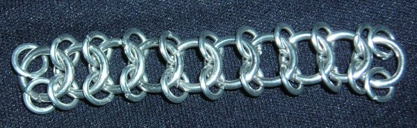
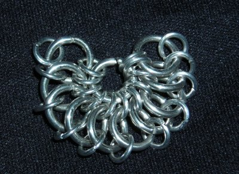
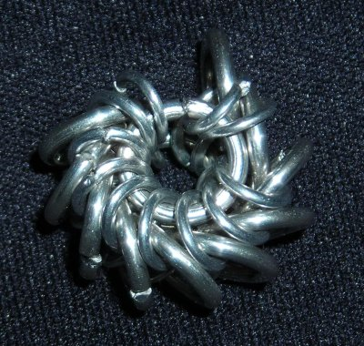
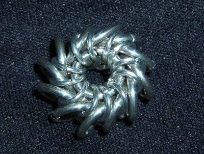
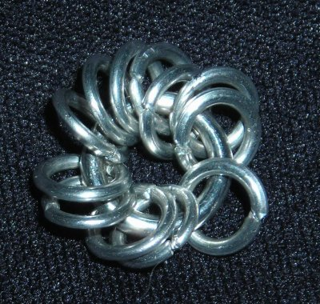
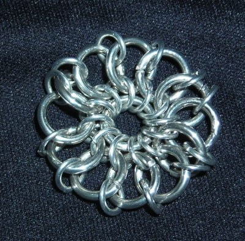

Constructing Whirlybirds
This tutorial shows two methods of making the popular Whirlybird pendants. It is a very simple weave to make, though it can be tricky to learn just by looking at a photograph. Whirlybird is a weave by Noldolantë.Recommended ring sizes (as quoted from Noldolantë): 14 ga 3/8” and 16 ga 1/4"; 16 ga 1/4" and 18 ga 3/16”; 18 ga 3/16 and 20 ga 1/8”.
How I Make Whirlybirds
This is the method that I use. I find it is a little easier to close the second center ring when done this way, but frankly the difference between this method and the other is minimal.1. Make a strip of Snakeskin-style European 4:1. The smaller rings should be on the outer edges, with one row of larger rings down the middle. For a 12-unit Whirlybird (the optimal size), this strip should have ten large rings and twenty-two small ones.

2. Put one large ring through all of the small rings on one edge.

3. Put another large ring through all of the small rings on the other edge.

4. Now, add in the last four rings, two small and two large, to close up the top of the Whirlybird. You should count twelve large rings and twelve small ones on a side.

An Alternate (And Possibly More Popular) Way
Most of the descriptions I’ve seen so far of making Whirlybirds use this method.1. Put twelve small rings on one large one.

2. Continue outward as if you were making a coif-top, but with no expansions. You need two rows: the first one will be large rings (the middle row of the Snakeskin), the second will be small rings. I speed-wove the two rows, but you can add the rings one at a time as well.

3. It now ought to look pretty much like Step 2 of the previous method, only without the missing rings. From here you can just add the other large ring through the outer edge of small rings. If it is difficult to close, take out one or two of the rings in the Snakeskin and add them in once you’ve closed it, just like in the previous method.
Quoted from Noldolantë:
“Depending on your aspect ratio, you can use more or less rings around the center rings to make a tighter or looser Whirly. 12 is probably the all around best and works well with the sizes [above]mentioned. One thing to keep in mind is that if you want to connect them into a chain you should have an even number of rings so that you'll have the same number of 'free' rings on either side.”
Whirlybirds make good pendants, especially if you use Anodized Aluminum or any other colored metal to give them a touch of personality. You can also put beads and such in the middle – possibly coins and cabochons as well. Here is my page with variations on the Whirlybird pendants.